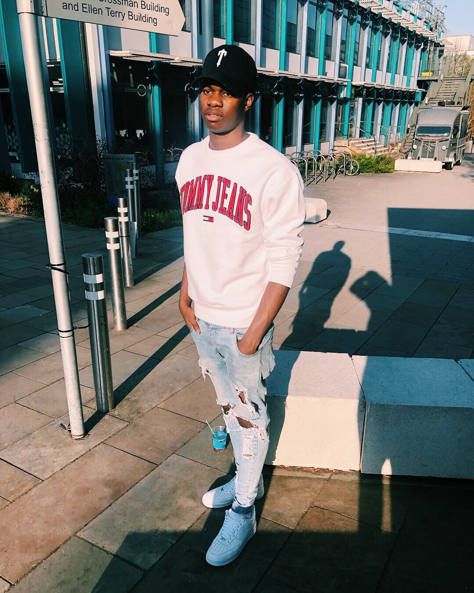

Biography
Hello my name is Oluwatoyin Thomas but all my friends and family call me “toyin”, I was born in South East London in an area called Walworth. When I reached the age of 7 I moved to a new area in North West London called Harlesden with my father, I then moved back in with my mother when I turned to the age of 9 but we had completely left London and had moved to Coventry. The reason as to why I loved the Jordan shoe so much but for along as I can remember Michael Jordan has been my favourite player in my favourite sport and I have always wanted a pair of his shoes but they were always too expensive for my parents to buy so when I turned 16 I started working a part-time job in nandos to be able to purchase my first pair of Jordan’s, and those were the Jordan 1 “New Love”. i started this colection in 2015 and is still on going with some of more addition being added this year.